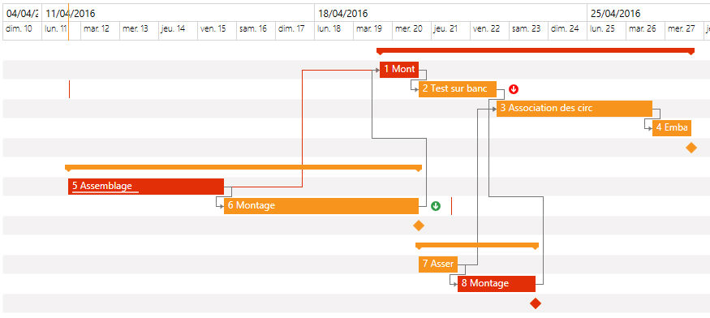

Une autre fonctionnalité de l'objet Gantt et de mettre en évidence le chemin critique.
La fonction XmeGanttAddHighlightedTask permet d'ajouter dans la liste des tâches en surbrillances l'identifiant des tâches voulues.
Pour activer/désactiver l'affichage, il faut positionner l'option GANTT_OPT_DISPLAY_HIGHLIGHTED_TASKS. Si la valeur passée est TRUE, alors les tâches concernées auront un fond rouge (même si le fond est forcée au niveau de la tâche). Si la valeur passée est FALSE, alors les tâches reprendrons leur couleur d'origine.

Voir l'exemple de programmation complet.